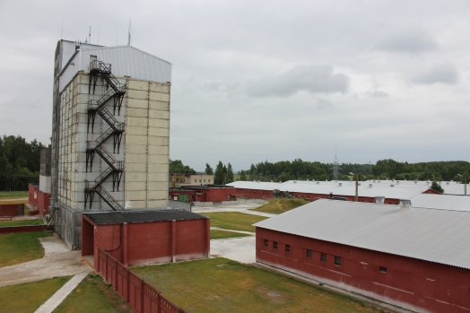

Despite taking biosecurity very seriously, Danish-owned Rupinskai Farm in eastern Lithuania became the first farm in the European Union to be hit by the recent wave of African Swine Fever outbreaks. Pig Progress travelled to Lithuania to reconstruct what happened.
Rupinskai Farm is a farm many can only dream of having in Lithuania. Double fencing all around the premises, showering upon entrance and exit, and dedicated staff having been trained to think in terms of biosecurity. Only think of the on average 31 pigs weaned per sow per year, achieved in Soviet-built facilities with still 'good-old' equipment dating from those days – and it becomes clear that whatever caused African Swine Fever (ASF) to occur in Rupinskai Farm, it wasn't negligence.

Claus Baltsersen, CEO of the Idavang Group: Some insects must have visited a dead wild boar and then came into the stables, stinging one of the pigs.
"We don't know how it got into our farms," says Claus Baltsersen, CEO for Idavang Group, the Danish holding company of Rupinskai Farm. "There have been state veterinarians visiting us, European Commision experts and even prosecution experts. All three came back to us: no conclusion. We also asked a team from PIC to do research, we invited Spanish researchers, who had already been following ASF when it was spreading through Russia. They got back to us without any conclusion. And that is very irritating! After all, if you know what caused it, you can do something about it."
In the absence of solid proof, Baltsersen has to make a well-educated guess: "The outbreak started in one of the weaner pens, in the middle of the farm. That's why I think it must have been caused by bugs or insects – e.g. horse flies. There were a lot of them in July 2014. These flies can be a vector, but I know scientists have never proved they are able to cause disease. Our theory is that there must have been a dead wild boar laying outside the farm. Some insects must have visited it and then came into the stables, stinging one of the pigs."

The first 300 finisher pigs went into Rupinskai in the months April-June 2015. After an intensive disinfection they were spread out over the entire farm – and all performed as usual.
Rupinskai pig farm owned by Danish group
Zooming out a little, Rupinskai Farm was the second acquisition of the Idavang Group, a Danish investment group which has concentrated on pig farming in Lithuania and Russia since 1999, for more information, see box: 'The Idavang Group'. Like all major pig farms in Lithuania, the farm complex was built in Soviet times at the beginning of the 1980s. It was derelict when acquired by the Idavang Group in early 2000. The farm had always benefited from the heat of a nearby nuclear plant, but since this plant had been abandoned, additional heat sources were not to be found and the farm was closed.
Idavang solved this problem by installing a straw heater – water being boiled by burning straw, thus providing enough warmth to keep the farm going even in winter, when temperatures can drop to -35°C. Baltsersen says that, just like in all farms acquired by Idavang, many things had to be upgraded. They did, however, maintain what was still in working order. The buildings are often made of concrete and therefore very durable. In addition, quite often farm equipment were found to be in good working order. Soviet-style farrowing crates with cast-iron fencing and concrete floors often still did the trick very well – they were even well ahead of their time using free farrowing crates.

Rupinskai Farm, Lithuania
In times of production, Rupinskai Farm houses 1,500 sows, who together produce about 40,000 finisher pigs per year. The farm consists of 20 pig houses: two insemination houses; two gestation houses; five farrowing sections; three weaning sections and eight finisher sections. Just like many communist-style facilities, the farm consists of monoblocks, connected to each other by long aisles in the middle. Weaning occurs at 28 days; the farm reached an average of 31 piglets per sow per year.
Photo: Rupinskai Farm from above – the facility is located only 20 km away from the border with Belarus.
Roofs had to be replaced to ensure they would be water tight and to allow for a proper ventilation system. Where necessary new feeders were added. Add to that a refreshing dose of modern thinking and management – Baltsersen can tell of various examples within the Idavang Group where production was increased by 50% using only 25% of the staff compared to the old days.
In mid-July 2014, Rupinskai Farm offered work to 25 full time employees. They took care of the 1,500 sows, who together produced about 40,000 finisher pigs per year. The farm strives to keep its herd healthy and has been doing so for a long time. One of the recent aims has been to reduce feed costs by getting a better feed conversion, since they make up about 80% of the costs. Some variation with different breeding lines had been initiated recently to figure that out.
Farm tests positive for African Swine Fever outbreak
Such was the situation when came late July, 2014, when staff noticed odd behaviour in the weaning section. In one pen piglets became sick, stopped to eat. A few pigs died. It was just before they would be moved to the finishing section. Some sick pigs were temporarily put into a different pen, and the transfer of the weaners to the finishing house was completed as planned.

The room where, most probably, the first ASF infection occurred – in the grower barns.
Baltsersen says, "Everything seemed fine until one morning, the sows didn't eat. When we started looking, quite a number of sows, about five, were found dead. Others had high temperatures. Something was wrong here. Later that day I decided together with our COO Lars Christiansen what something was totally wrong. We informed the state vets and called our Danish vet. He immediately flew over – I picked him up at 11 pm that same night from the airport. When we came back, about 40 sows had died. That's how fast it went."
Baltsersen describes the phenomenon inside the pig house as "the worst I have ever seen." The effect of the virus had a deep impact on him. "I have never seen anything like that. All you can do is just talk about it. Sows, good normal sows, suddenly breathing heavily. You know they are dying, they are suffering. We knew it must be a swine fever. They must have had blood exploding in their organs. If it is in the heart – they will die immediately. If it is in other organs, they die slowly – you just see it in their eyes."

In total, Rupinskai has three weaning barns. They are stood empty waiting for new inhabitants.
In hindsight and from a distance, the cause of the deaths might seem ubiquitous. At that time, however, nobody thought that ASF really could be true, Baltsersen says, pointing to the extensive biosecurity in and around the farm. "In the past, his farm has even been used as an example by the Lithuanian state vets to demonstrate how well biosecurity should be applied. So I was sure that ASF would not be able to get into the farm."
Still, that is what had happened. Finisher pigs had also started getting very ill – the first cases occurred exactly where the weaner pigs from the infected batch had been placed. Soon, the informed state vets appeared on-site, and took control of the farm. Blood tests were taken to the laboratory. Baltsersen: "The next morning we heard the farm was positive for ASF." There was barely time to let things sink in.
Only commercial pig farm
With the outbreak, Rupinskai Farm took a unique position, as it was the first – and at the time of going to print with this publication, the only – commercial pig farm in the European Union which was affected by the ASF wave that entered Eastern Europe since 2007. Initially, the virus entered the Caucasian area, with being noted in Georgia and Armenia. Ever since, it has spread relatively quickly through Russia, infecting both markets in Belarus and Ukraine. The only known ways of transmission are through direct contact, infected meat, fomites and ticks. The type of tick which does transmit disease, however, of the Ornithodoros genus, is known to only thrive in (sub)tropical climates.
Since early 2014, the virus has also progressed into the European Union, affecting Poland, Latvia, Lithuania and Estonia. Having made a progress of approximately 400 km per year, it is the big question whether the virus can be stopped. Ominously, in Germany, pig organisations are preparing for what might come. Several experts from Russia as well as inside the EU, warn that the ASF programmes as set up by the European Union, dividing the affected areas into monitoring zones, might not be stringent enough to stop the virus from spreading.
Cleaning the pig farm
In the case of Rupinskai, the authorities acted very swiftly. A complete depopulation had to be carried out immediately, in cooperation with Lithuanian state vets. Baltsersen mentions the effect it all had on staff. "The staff at Idavang like to work with pigs. To them it's not just pigs, they are their pigs. They were totally shocked and then they had to kill the pigs."
The entire process took about three days – staff worked 24 hours per day. The approximately 20,000 pigs in stock were culled using gas, buried on-site in a corner of the estate, their corpses covered with quicklime (calcium oxide) and then covered with at least 3 m of soil. A membrane underneath ensured that no fluids could leak into the ground water. All that serves as a reminder of all this is a a slope in the far corner of the complex.

The slurry lagoons with in the background, under a slight slope, the burial site of the 20,000 pigs that were culled after ASF had broken out.
The farm received a helping hand from the local community, Baltsersen explains, having the 'deepest respect' for all who supported the farm. "Locals came to offer their help digging the big hole, to clean everything." When all was done, and the last bit of earth was added to the burial site, the silence was deafening.
It wasn't the end though – it was a new start. What lay ahead was a process of months with intensive cleaning, disinfecting, stripping, approval procedures, more disinfecting rounds and trial pig batches. A gigantic job for the staff that were asked to stay and coordinate. Their task: prepare Rupinskai Farm to come back, when the time is right, even stronger than ever.
The Idavang Group
The African Swine Fever (ASF) outbreak was a heavy blow for the owning Idavang Group, but due to its size, the group has managed to sail through the storm. In total, the company owns 12 pig farm complexes in Lithuania and two in Russia. Due to ASF as well as geopolitical boycotts, borders between the European Union and Russia closed in 2014. This caused an oversaturated market with lower-than-normal prices for pigs in Lithuania and the EU, but caused a very good pig market in Russia.
Spread out over these complexes, Idavang (Germanic for 'a peaceful plain where the gods live'), has the capacity for 27,000 sows and reaches on average 31 piglets weaned per sow per year. In addition, the company also produces 31,000 tonnes of grain per year. The group employs 800 staff.
Idavang came to Lithuania in 1999 when four Danish pig farmers, including Claus Baltsersen, decided to invest in Lithuanian pig industry by purchasing collective farm complexes which were built in the Soviet era. In total, the country houses 34 of these. Over the years, money made has been reinvested in acquiring new farms, at the moment, the Idavang Group owns 12. Of these, 11 are farrow-to-wean or finish operations; one is a boar stud. Baltsersen: "Generally, we aim to have a positive cashflow from the farm within 90 days after the acquisition of the site."
In total, the company produces about 500,000 pigs yearly in Lithuania. Roughly 200,000 are sold as growers – equally divided over Lithuanian and Polish markets. Additionally, Idavang sells 300,000 finishers to market at about 115 kg liveweight. Again, half is sold to Lithuanian packers, the other half to Polish packers. In the last case, the meat often comes back to Lithuania as processing is simply more affordable in Poland.
Idavang actively tries to find ways to deal better with its manure. One strategy is to convert it to biogas – the group recently had three biogas plants constructed on its complexes. In addition, many farms have lagoons, where solid and liquid parts are separated, after which it is supplied on lands in a ten km radius using hose systems. This avoids both the odour as well as trucks having to enter farm premises to pick up the manure.
The business in Russia, despite being on only two farms, is relatively sizeable, with 300,000 pigs sold to market every year. In 2008, the company acquired an empty farrow-to-finish complex with a 6,700 sow capacity, at about 60 km from St Petersburg. In addition, as opposed to Lithuania, Russian authorities also permitted Idavang to commence the construction of a greenfield farrow-to-finish farm complex. They had this built near Pskov, near the border with Latvia and Estonia in 2011 for 3,500 sows. More greenfield farm constructions are underway in Idavang Russia.
Click here for more on the Idavang Group.
This article will appear in the upcoming Pig Progress magazine, volume 31, no. 7